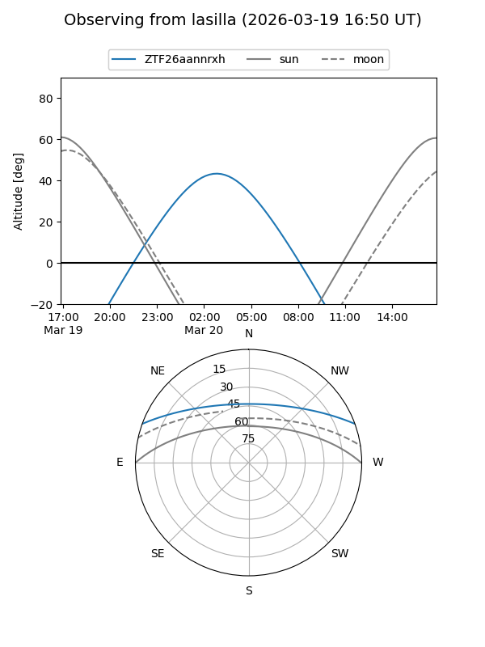
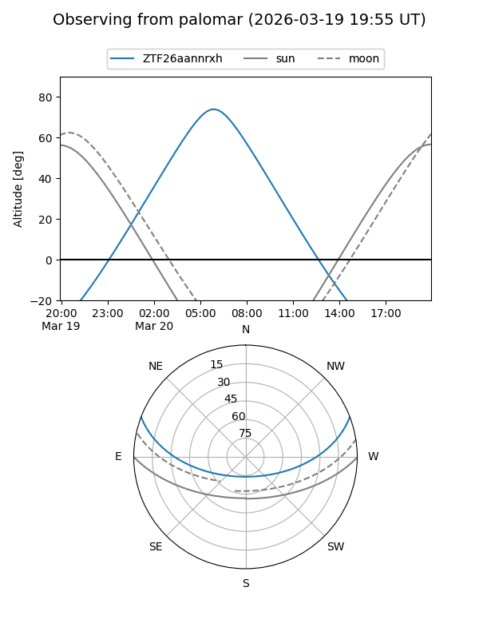

ZTF26aannrxh
Target ZTF26aannrxh at 2026-03-20 07:58
Aliases and brokers:
FINK: link
Lasair: link
ALeRCE: link
alt names
ZTF26aannrxh (ztf,fink_ztf)
Coordinates:
equatorial (ra, dec) = 148.5695,+17.48981
equatorial (HMS+DMS) = 09:54:16.67,+17:29:23.31
galactic (l, b) = (216.6977,+48.12944)
Flags:
Photometry:
last ztfg=20.11
1 ztfg detections
Lightcurve
Visibility


Additional plots